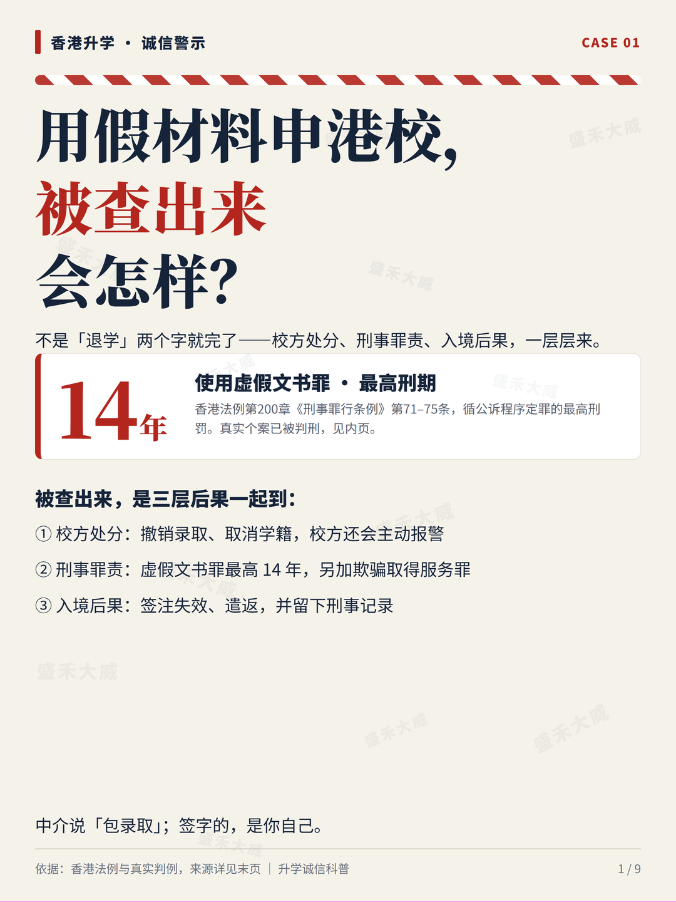
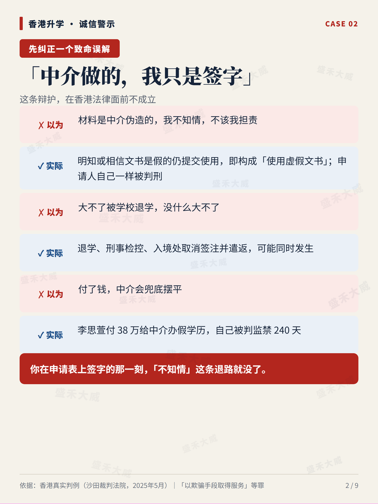
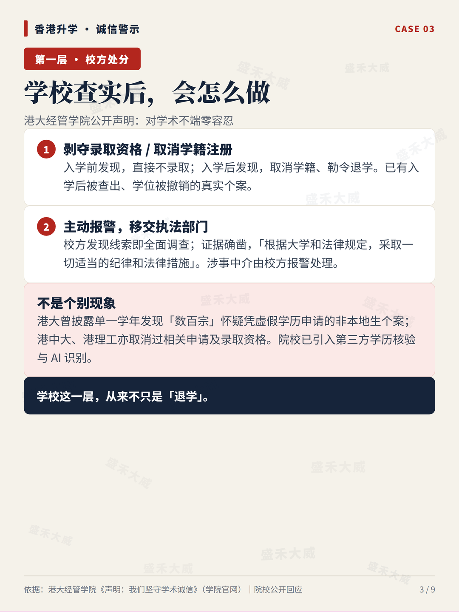
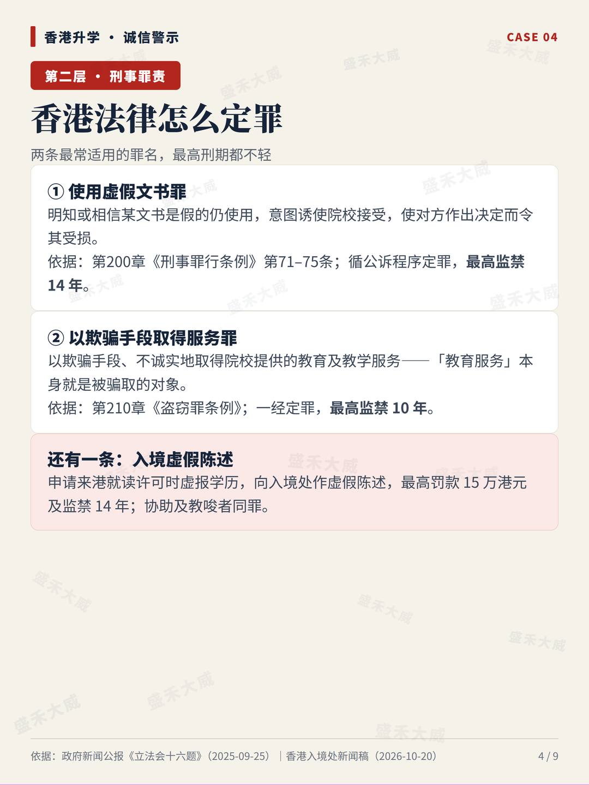
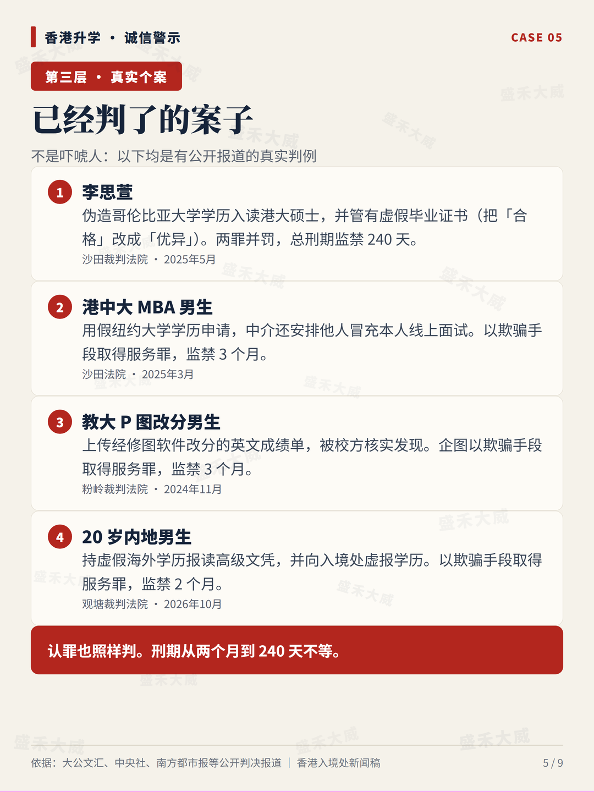
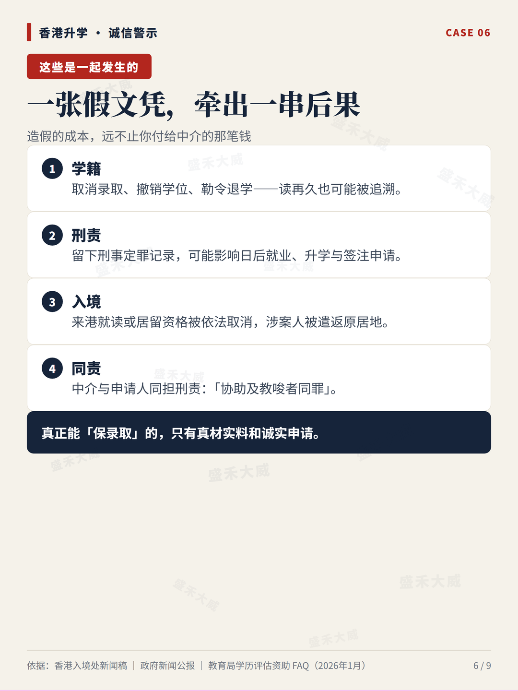
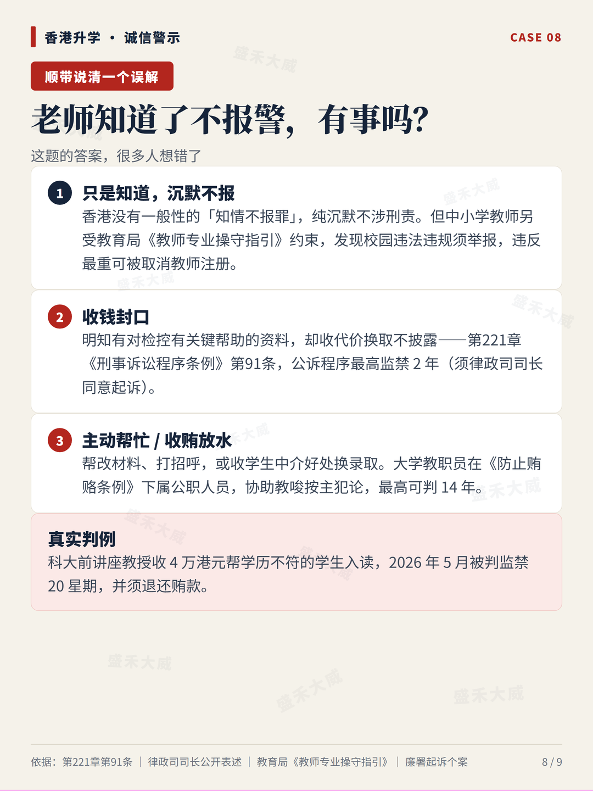

香港学习 · 升学诚信科普 · 专题（第 15 篇）
用假材料申港校，被查出来会怎样？Fake Applications to Hong Kong Universities — The Real Consequences
校方处分、刑事罪责、入境后果，三层一起到。以下 9 集图卡逐集独立成页，点开任一张可看原图。
最关键的结论：「材料是中介做的，我不知情」在香港站不住。法律看的是你明知文书是假的还拿去用——中介动手、你签字，申请人自己就是责任人。李思萱付 38 万给中介办假学历，自己被判监禁 240 天。

不是「退学」两个字就完了——校方处分、刑事罪责、入境后果，一层层来。

这条辩护，在香港法律面前不成立。

港大经管学院公开声明：对学术不端零容忍。

两条最常适用的罪名，最高刑期都不轻。

不是吓唬人：以下均是有公开报道的真实判例。

造假的成本，远不止你付给中介的那笔钱。

从递交到入学后，关卡一层层加。

这题的答案，很多人想错了。

申请香港院校，学历成绩务必是真的。
怎么一级级找到这里Navigation
首页 › 文化遗产 › 香港学习 › 背景资料造假后果 › 单集。每集页顶部都有逐级面包屑，页尾有上一集／下一集与返回总览入口。